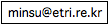

Written by MinsuJang 
- Last Update: 2006-10-10
This document contains a short manual of Bossam shell. Bossam shell is a small command shell in which you can perform inferencing actions such as loading a rulebase or ontology, adding rules and facts, and initiating reasoning. This document provides an overview of available shell commands.
Contents
1. Running Shell
You can run Bossam shell by executing a shell script, bossamsh, for running bossam shell is provided in the release. On Windows,
bossamsh.bat
On Linux/Unix,
bossamsh.sh
1.1. Default Namespace Prefixes
On running the shell, it loads default well-known namespace prefixes as shown below.
[Bossam(v0.7b80) 2003-2005(c)ETRI] -- Default Namespaces: prefix owl = http://www.w3.org/2002/07/owl# prefix rdf = http://www.w3.org/1999/02/22-rdf-syntax-ns# prefix rdfs = http://www.w3.org/2000/01/rdf-schema# prefix xsd = http://www.w3.org/2001/XMLSchema# > load n3 from http://www.bossam.com/ex01.n3; > ask owl:equivalentClass(?x,?y);
As shown, prefixes for four famous namespaces are defined. You can use the prefixes to assert facts or rules as shown.
1.2. Loading OWL Inference Rules
You don't have to load OWL inference rules explicitly anymore. Whenever you load RDF or SWRL, OWL inference rules are automatically loaded.
2. Shell Commands
2.1. Loading a knowledge base
2.1.1. Synopsis
load [rb | rdf | n3 | swrl | ruleml | swrlrdf] from <URI>;
2.1.2. Explanation
With this command, you can load rule-bases or ontologies written in RDF/XML, N3, Buchingae, SWRL, or RuleML into the working memory of Bossam. <URI> indicates the location where the specified rule-base or ontology can be obtained.
2.1.3. Samples
The following command loads a Bossam rulebase from the given URI.
> load rb at file:///c:/temp/rb-test.boo;
The following command loads an OWL ontology written in RDF/XML.
> load rdf at http://www.etri.re.kr/2004/test/weather.owl;
The following command loads a SWRL/OWLX rulebase from the given URI.
> load swrl at http://www.etri.re.kr/2004/test/some.swrl;
The following command loads a SWRL/RDF ontology & rulebase from the given URI.
> load swrlrdf at http://www.etri.re.kr/2004/test/some.swrl;
The following command loads an RDF or OWL document written in N3 from the given URI.
> load n3 at http://www.etri.re.kr/2004/test/weather.n3;
The following command loads a rulebase written in RuleML from the given URI.
> load ruleml at http://www.etri.re.kr/2004/test/some.ruleml;
2.2. Setting namespaces
2.2.1. Synopsis
namespace = <NS_URI>; prefix <PREFIX> = <NS_URI>
2.2.2. Explanation
namespace sets the base namespace of the shell session. Every unqualified name appearing after this command is condidered to be in the base namespace. prefix adds a new namespace prefix to the shell session.
2.2.3. Samples
> namespace = http://www.etri.re.kr/2004/Test#; > prefix james = http://www.person.com/James#; > assert fact f1 is father(james:A,james:B);
Names in the last command are qualified as follows:
f1 --> http://www.etri.re.kr/2004/Test#f1
father --> http://www.etri.re.kr/2004/Test#father
james:A --> http://www.person.com/James#A
james:B --> http://www.person.com/James#B
2.3. Asserting a new fact
2.3.1. Synopsis
assert fact <fact_ID> is <fact_body>;
2.3.2. Explanation
This command asserts a new fact and adds it to the Bossam's working memory, which constitutes the inference context. <fact_ID> is the ID of the fact and should be a plain name. <fact_body> is a ground predicate, and the predicate symbol or constant terms can be specified by a plain name, qualified name, or a full URI.
2.3.3. Samples
The following code fragment shows various formats of asserting facts.
> assert fact f1 is father(John,Bob); > assert fact f2 is env:temperature(30,space:LivingRoom); > assert fact f3 is http://www.etri.re.kr/2004/Environment(20,space:LivingRoom);
2.4. Asserting a new rule
2.4.1. Synopsis
assert rule <rule_ID> is <rule_body>;
2.4.2. Explanation
This command asserts a new rule and adds it to the Bossam's working memory, which constitutes the inference context.
2.4.3. Samples
The following code fragment shows various formats of asserting rules.
> assert rule r1 is if env:Temperature(?x,?loc) and [?x < 20] then cool(?loc); > assert rule r2 is if person:Located(?x,?loc) and space:In(?loc,?loc2) then person:Located(?x,?loc2);
2.5. Running an inference session
2.5.1. Synopsis
run;
2.5.2. Explanation
This command initiates a forward-chaining inference session. It prints out the truth value or a list of derived facts.
2.5.3. Samples
> run;
2.6. Querying Knowledge Base
2.6.1. Synopsis
ask <query>;
2.6.2. Explanation
This command throws a query into the current working memory. Answers with a truth value of the query or successful bindings. Query is the rule without the consequent part. An atom or a conjunction of atoms.
2.6.3. A Sample Session
> namespace is http://www.etri.re.kr/T#; > assert fact f1 is father(a,b); > assert fact f2 is father(b,c); > ask father(?a,?b) and father(?b,?c); {a=http://www.etri.re.kr/T#a, c=http://www.etri.re.kr/T#c, b=http://www.etri.re.kr/T#b} > exit; Exiting...
2.7. Creating a Java instance
2.7.1. Synopsis
new <java-class-name>;
2.7.2. Explanation
This command creates an instance of the specified Java class and puts it into the context memory of the current inference session. The Java object can be referenced from the rules. Currently, only default constructor is supported.
2.7.3. A Sample Session
>new java.lang.String; >assert rule r is if java://java.lang/String#class(?o) and java://java.lang/String#length(?o,?l) then StringLength(?l);
2.8. Setting attributes
2.8.1. Synopsis
set <attribute_name> = <attribute_value>;
2.8.2. Explanation
This command is used to set values for various built-in attributes of bossam shell.
2.8.3. Built-in Attributes
showtime: If this attribute is set to true, elapsed time is displayed for every shell command.
imports: If this attribute is set to true, OWL imports is enabled. Default is false.
2.8.4. Samples
> set showtime = true; > set imports = true;
2.9. Displaying Rules and Facts
2.9.1. Synopsis
show <facts | rules | all>;
2.9.2. Explanation
Shell displays all the rules or facts in the working memory.
2.9.3. Samples
The following command make the shell display all the facts in the working memory.
> show facts;
The following command make the shell display all the rules in the working memory.
> show rules;
3. History
2006/10/10: Added explanations on new commands: new, imports
- 2005/11/10: Revised command descriptions to reflect changes.
- 2005/08/17: Revised 2.7 and 2.1.
- 2005/05/11: Added 1.1, 1.2, and 2.8. Revised 2.1 and 2.2.
- 2005/04/15: Revised.
- 2004/06/28: Created.